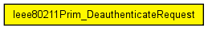
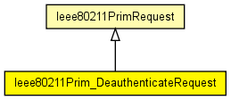

Losely based on MLME-DEAUTHENTICATE.request
NOTE: there is no Deauthenticate Confirm, because Deauthenticate Request takes place immediately, and nothing can go wrong (there is no reply from the AP to wait for)
The following diagram shows usage relationships between types. Unresolved types are missing from the diagram. Click here to see the full picture.
The following diagram shows inheritance relationships for this type. Unresolved types are missing from the diagram. Click here to see the full picture.
| Ieee80211PrimRequest (class) |
Base class for request primitives |
| Name | Type | Description |
|---|---|---|
| address | MACAddress | |
| reasonCode | int |
// // Losely based on MLME-DEAUTHENTICATE.request // // NOTE: there is no Deauthenticate Confirm, because Deauthenticate Request // takes place immediately, and nothing can go wrong (there is no reply // from the AP to wait for) // class Ieee80211Prim_DeauthenticateRequest extends Ieee80211PrimRequest { MACAddress address; int reasonCode @enum(Ieee80211ReasonCode); }